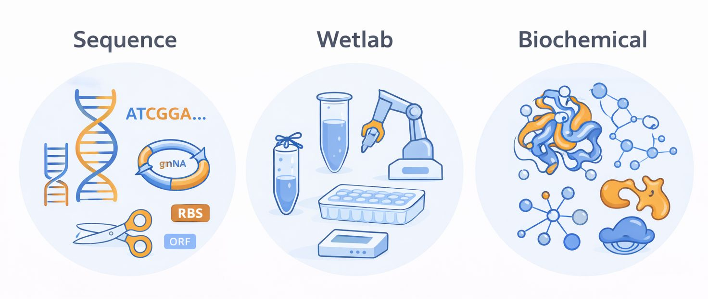

gillgroup.org
Around 2015 there was a wave of interest in automating synthetic biology, and the premise was organizing experiments along a DBTL cycle. Design is deciding what genetic constructs to try. Build is physically constructing them. Test is measuring what they do. Learn is analysing the results to decide what to change, which feeds into another round of design. In this course we use DBTL as a high-level way to locate a task in the lab process, but not as an implementation plan. DBTL is too broad to tell you what to code. To actually automate, you have to choose the right abstractions for the situation, define clear inputs and outputs, and encode the decision logic that moves the work forward. There is nothing wrong with this view of the problem. It is just not the right framework for thinking about how to approach it.
The Design-Build-Test-Learn cycle drawn as a loop of four stages feeding into one another.
The same DNA, three different abstractions

The better way to think about it is in terms of models — abstractions of information. The same underlying DNA is represented differently depending on where you are in the cycle. In the sequence domain, DNA is information, and the abstractions are sequence-level objects: guide RNAs, ribosome binding sites, coding sequences, plasmids, restriction sites. The logic is about manipulating strings and applying design rules. In the wetlab domain, DNA is a physical sample, and the abstractions are experimental objects: tubes, plates, robots, thermocycler programs, protocols, runs. The logic is about planning workflows, tracking samples and respecting the constraints of instruments. In the biochemical domain, DNA is a program the cell executes, so the abstractions are genes, expression, interactions and functional outcomes. Automation is the goal in all three, but the abstractions you must use — and therefore the functions you implement — are fundamentally different depending on where you are.
Three panels for the same DNA. The sequence domain treats it as information, with guide RNAs, ribosome binding sites, coding sequences and restriction sites. The wetlab domain treats it as a physical sample, with tubes, plates, robots and protocols. The biochemical domain treats it as a program the cell runs, with genes, expression and function.
What this course does not cover
Structure prediction and docking
BLAST and other sequence-similarity algorithms — BioE 131
Training machine-learning models on biological data — BioE 145
These are areas adjacent to biodesign automation that are not the focus here. We are not covering the training of machine learning models, including language models, on biological datasets to learn design rules or make design predictions. Instead we use language models as engineering tools: they help write code, and they serve as a natural-language interface for calling well-defined functions. If you want the data-driven side of bioinformatics and sequence-similarity methods like BLAST, BioE 131 is the right place. If you want courses focused on building machine learning and AI models for biology, including training approaches, BioE 145 is a better fit.
Three adjacent areas the course does not cover: structure prediction and docking; BLAST and sequence similarity, which is BioE 131; and training machine learning models on biological data, which is BioE 145.